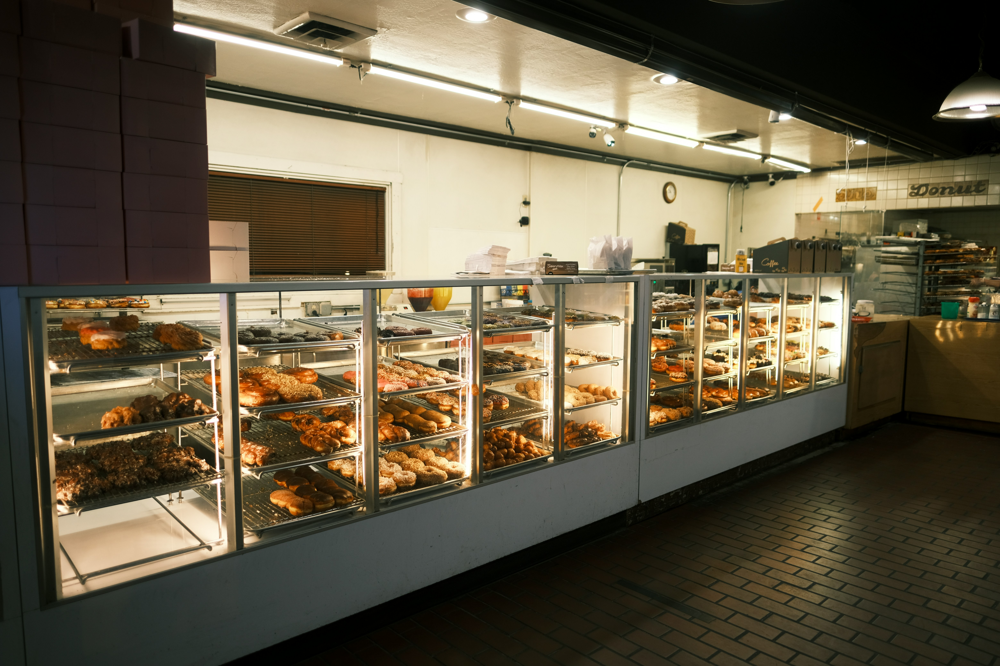

Our story, our values, and our passion for baking.
Sunrise Bakery was founded in 2018 by husband-and-wife team Pieter and Elize van der Merwe. What started as a small home-kitchen operation selling sourdough loaves at the local weekend market has grown into a beloved neighbourhood bakery on Church Street.
We believe in the art of slow baking — using traditional fermentation methods and the finest locally sourced organic grains. Every loaf is hand-shaped, every croissant is painstakingly laminated, and every pie is made from scratch.
Today, we're proud to support local farmers and producers, and to serve a community that shares our love for real, wholesome food.
